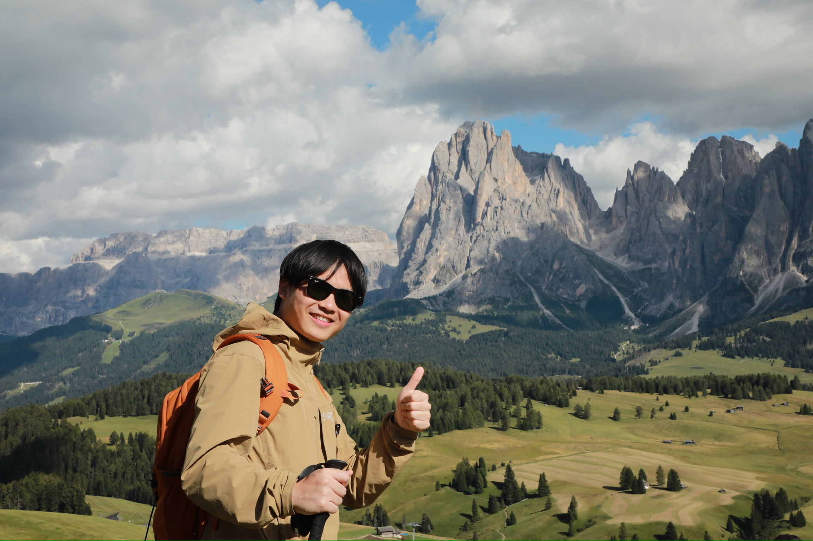

High-z quasar hunter

I am a PhD student in Astronomy at Leiden Observatory.
I am broadly interested in phenomena in the early Universe during the epoch of reionization, although my work so far has focused mainly on high-redshift quasars.
I am an observer by training and have had the privilege of using many remarkable telescopes, while still learning every day how to make the most of them.
My current interests include the demographics of supermassive black holes, the connection between star formation and black hole growth during reionization, and the luminosity functions of various high-redshift sources.
Last Update: November 9, 2022